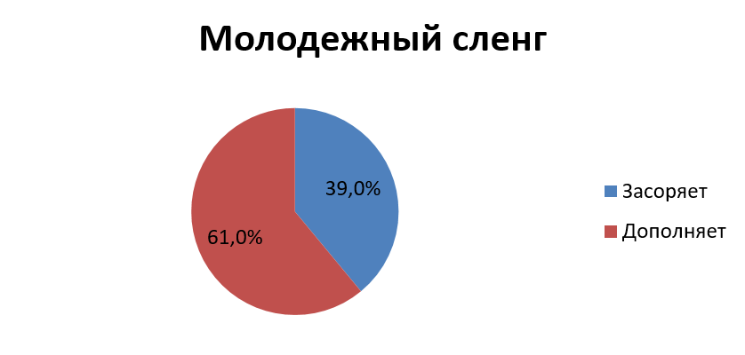

Существует достаточно большое количество определений сленга, нередко противоречащих друг другу.
Но почти все исследователи считают, что сленг образуют слова, которые противопоставляются словам официального, общепринятого языка.

Сленг понятен лишь представителям социальной или профессиональной группы, которая ввела в речь данное слово или выражение, ставшее со временем общеупотребительным.